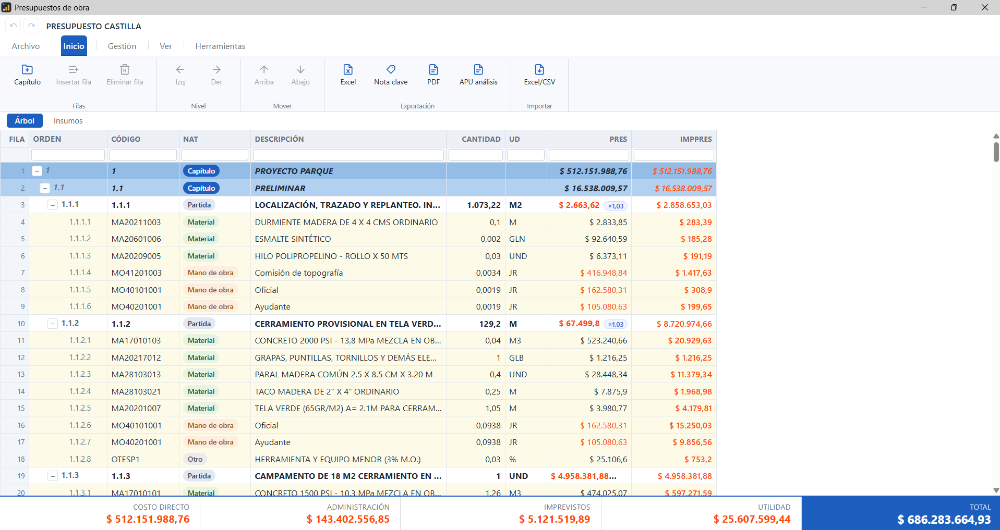

ADOS Presupuesto
Un software que le permite crear presupuestos de obra completos y estructurados — capítulos, subcapítulos, partidas y análisis de precios unitarios — donde las cantidades salen siempre de mediciones trazables: ingresadas manualmente, tomadas de los planos CAD o extraídas del modelo BIM. Ese mismo presupuesto acompaña la obra hasta el cierre, con seguimiento mensual, cobros parciales y actas de modificación.

La herramienta para crear presupuestos, mantener catálogos y seguir los contratos de obra.
Software de construcción de presupuestos y seguimiento de proyecto, orientado a BIM sin dejar de lado el CAD y el flujo tradicional. Integra mediciones, referencias, partidas e insumos en un entorno coherente y fácil de usar.
Facilita la estandarización, la reutilización y el intercambio de datos entre los distintos agentes de la edificación: planificación, seguimiento mensual y los cambios que surjan durante la ejecución, en un solo entorno.
La hoja de cálculo es una gran herramienta. No es un sistema de presupuesto.
El problema no es Excel: es pedirle que haga de base de datos de insumos, de estructura jerárquica, de generador de APU y de sistema de seguimiento al mismo tiempo. Ahí aparece la informática sumergida — archivos que solo entiende quien los creó, incompatibles entre agentes y con el error viajando hasta la obra.
ADOS Presupuesto trae resuelto de fábrica todo ese montaje previo.
Necesita una base de datos antes de empezar
Para que un código traiga precio, unidad y rendimiento hace falta un catálogo de insumos ya montado. Sin él, cada celda es un valor escrito a mano que nadie puede actualizar después.
No hay jerarquía real
Capítulo, subcapítulo y partida se simulan con agrupaciones y segmentación de datos. Funciona, pero navegar el árbol, mover un capítulo completo o renumerar sigue siendo trabajo manual.
APU y memorias construidos a mano
Cada plantilla de análisis de precio unitario y cada memoria de cálculo hay que armarla, formatearla y mantenerla. Y no se generan solas: se copian una por una, partida por partida.
Vínculos que se rompen en silencio
Los datos viven amarrados entre hojas. Basta insertar una fila, renombrar una pestaña o mover un rango para que la referencia se pierda — y el número sigue apareciendo como si nada.
Una fórmula distinta en cada hoja
Cada hoja llama celdas diferentes, así que la fórmula se rehace pestaña por pestaña. Navegar entre decenas de hojas termina siendo parte del trabajo diario.
Las cantidades de material piden otra hoja
Para saber cuánto material se necesita hay que montar una hoja aparte que busque y sume por insumo. Y hay que saber hacerla: el presupuesto queda dependiendo de quien domina el archivo.
Y todo se repite en el siguiente proyecto
Catálogo, plantillas, fórmulas y vínculos se vuelven a montar desde cero en cada presupuesto. Horas de trabajo antes de escribir la primera partida.
Del modelo al acta de obra, sin salir del entorno.
Un mismo dato recorre las tres etapas: medición, precio y ejecución. Nada se vuelve a escribir a mano.
Integrado con BIM y CAD
ADOS conecta la información del modelo BIM con los datos económicos y de planificación: el diseño se convierte en un presupuesto medible y verificable, y la colaboración entre proyectistas, técnicos y gestores de obra deja de depender de archivos sueltos.
Cotizaciones, márgenes e insumos en un mismo lugar
La planificación vive dentro del presupuesto, no al lado. Los insumos, las cotizaciones de proveedor y los márgenes se resuelven sobre las mismas partidas, y cualquier ajuste se refleja de inmediato en el costo del proyecto.
Seguimiento mensual, cobros y modificaciones
La obra cambia. Las actas de modificación registran mayores y menores cantidades sin perder el historial de versiones, y el corte mensual con cobros parciales se calcula sobre el presupuesto vigente, no sobre una copia.
Trabaja con las herramientas que ya usa.
El complemento para Revit añade tres acciones a la cinta y mantiene el modelo y el presupuesto sincronizados.
Exporta tipos, parámetros y cantidades del proyecto para vincular cada elemento del modelo con su partida.
Seleccione un elemento en el modelo y vea a qué partida está asignado, sin salir de Revit.
Recalcula las mediciones cuando el modelo cambia y refleja la diferencia en el presupuesto.
Un mismo software, útil para cada perfil de la obra.
Cada agente de la obra entra al mismo archivo con la información que le corresponde, sin rehacerla.
Presupuesto y mediciones desde las primeras fases del diseño, con trazabilidad hasta el elemento del modelo. Comparar alternativas deja de costar una semana.
Control técnico y económico del contrato: cortes mensuales, avance real contra programado y actas de modificación con historial completo de versiones.
Ofertas, análisis de precios unitarios y control de costos reales. Cotizaciones, insumos y márgenes viven en el mismo entorno del presupuesto.
Visión global del proyecto: presupuesto aprobado, ejecutado y pendiente, con la información estandarizada para intercambiarla entre todos los agentes.
Una licencia, dos computadores.
Elija cómo pagarla: cada año, o una sola vez y ya está. En las dos, la misma licencia le sirve en dos equipos — el de la oficina y el portátil, por ejemplo.
Por año
- La licencia sirve en dos computadores
- Las seis etapas, del presupuesto a la entrega
Pago único, sin renovación
- La licencia sirve en dos computadores
- Las seis etapas, del presupuesto a la entrega
- Se paga sola frente a la anual en dos años y medio
Precios en pesos colombianos, antes de IVA.
Escríbanos y le decimos cómo seguir: cómo se paga, cómo se instala y cómo se activa en los dos computadores. Si prefiere verlo funcionando antes de decidir, le hacemos la demostración sobre un proyecto suyo.
- Le respondemos con los datos para el pago y la descarga.
- La demostración es sobre su proyecto, no sobre uno de ejemplo.
- Si tiene prisa, escríbanos por WhatsApp y lo resolvemos hablando.